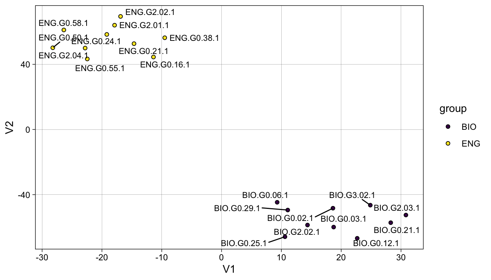

library(ruimtehol)
library(tidyverse)
library(Rtsne)
library(gt)13 Introduction to Vector Models and Word Embeddings
This is just a very quick walk-though tutorial on using vector models. This Lab only uses a pre-trained model. However, you can build your own model (which we will do in another Lab). You can also use vector models for classification tasks. For that, you should consult the document for the R package we’re using: ruimtehol.
There is an overview here:
http://www.bnosac.be/index.php/blog/86-neural-text-modelling-with-r-package-ruimtehol
And here:
https://github.com/bnosac/ruimtehol
For more about Word2vec and embeddings generally, see the overview here:
13.1 Basics
A variety of models are available for you on CMU Box:
https://cmu.box.com/s/o2y5lbaonmguf51h5kipa6i2v4y3nm3n
You can simply download a model and place it in the models directory. Then load the model.
For demo purposes, we’ll use a small one that contains the 50,000 most frequent tokens in COCA and embeddings in only 100 dimensions.
# model <- starspace_load_model("../models/en_coca_vec_sm.ruimtehol")
# model <- starspace_load_model("../models/en_stanford_cc_lg.ruimtehol")
model <- starspace_load_model("../models/en_coca_vec_50k.ruimtehol")Now we can check how similarities work.
embedding_similarity(
starspace_embedding(model, "dog"),
starspace_embedding(model, "cat"),
type = "cosine") |>
tibble::enframe() |>
gt()| name | value |
|---|---|
| dog | 0.8887681 |
Look for nearest embeddings.
starspace_knn(model, "shakespeare", 10) |>
data.frame() |>
gt()| input | prediction.label | prediction.similarity | prediction.rank |
|---|---|---|---|
| shakespeare | shakespeare | 1.0000000 | 1 |
| shakespeare | macbeth | 0.8593846 | 2 |
| shakespeare | shakespearean | 0.8482000 | 3 |
| shakespeare | elizabethan | 0.7955307 | 4 |
| shakespeare | dramatist | 0.7793428 | 5 |
| shakespeare | chekhov | 0.7715034 | 6 |
| shakespeare | chaucer | 0.7700459 | 7 |
| shakespeare | lyric | 0.7639523 | 8 |
| shakespeare | sondheim | 0.7615547 | 9 |
| shakespeare | lear | 0.7589097 | 10 |
We can also calculate document similarity.
embedding_similarity(
starspace_embedding(model, "what does this bunch of text look like", type = "document"),
starspace_embedding(model, "word abracadabra is even in the dictionary", type = "document"),
type = "cosine") |>
tibble::enframe() |>
gt()| name | value |
|---|---|
| what does this bunch of text look like | 0.9002735 |
Note that we can extract embeddings, as well.
embedding <- as.matrix(model)embedding[c("dog", "cat"), ][,1:10] |>
data.frame() |>
gt()| X1 | X2 | X3 | X4 | X5 | X6 | X7 | X8 | X9 | X10 |
|---|---|---|---|---|---|---|---|---|---|
| 0.3358528 | -0.06600608 | -0.082166046 | 0.3292679 | -0.2417040 | 0.07791379 | -0.07094227 | -0.076595172 | -0.3657310 | -0.1289230 |
| 0.3675254 | -0.10713406 | 0.002169422 | 0.2818099 | -0.2916131 | 0.01043738 | -0.05357843 | 0.002390111 | -0.2753031 | -0.1173636 |
This ability is useful if we want to plot the locations of words or documents.
13.2 Example from the MICUSP data
First, we’ll read in the text data and load some functions.
load("../data/micusp_mini.rda")
source("../R/helper_functions.R")Next, we’ll filter out two disciplines and prepocess the text.
df <- micusp_mini %>%
filter(str_detect(doc_id, "^BIO|^ENG")) %>%
mutate(text = preprocess_text(text, remove_numbers = T))Let’s sample out one example for each score from question “P1”.
get_embeddings <- function(x){
df <- x
idx <- seq(1:nrow(df))
doc_embed <- function(i){
e <- starspace_embedding(model, x = df[i,2], type = "document")
rownames(e) <- df[i,1]
e <- data.frame(e)
}
doc_embeds <- lapply(idx, doc_embed)
doc_embeds <- bind_rows(doc_embeds)
return(doc_embeds)
}Now we can extract the embeddings for each our documents:
doc_embeddings <- get_embeddings(df)
doc_embeddings <- doc_embeddings %>%
rownames_to_column("doc_id") %>%
mutate(group = str_extract(doc_id, "^[A-Z]+")) %>%
dplyr::select(doc_id, group, everything())From that, we calculated document similarity:
closest_docs <- function(doc_query){
pts <- doc_embeddings %>% filter(doc_id == doc_query) %>% select(X1:X100)
closest <- RANN::nn2(data = doc_embeddings[,3:102], query = pts, k = 11)
doc_ids <- doc_embeddings[closest$nn.idx,1]
doc_dist <- closest$nn.dists %>% as.vector()
df <- data.frame(doc_ids, doc_dist)
return(df)
}In order to exact the embeddings we’ll create a very simple function.
closest_docs("BIO.G0.02.1") |>
gt()| doc_ids | doc_dist |
|---|---|
| BIO.G0.02.1 | 0.0000000 |
| BIO.G0.29.1 | 0.1859816 |
| BIO.G3.02.1 | 0.1903899 |
| BIO.G2.02.1 | 0.1963893 |
| BIO.G0.03.1 | 0.1983193 |
| BIO.G0.06.1 | 0.2088154 |
| BIO.G0.21.1 | 0.2251164 |
| BIO.G2.03.1 | 0.2561836 |
| BIO.G0.25.1 | 0.2864632 |
| ENG.G0.16.1 | 0.2922092 |
| ENG.G2.02.1 | 0.2979244 |
And extract them.
closest_docs("ENG.G2.04.1") |>
gt()| doc_ids | doc_dist |
|---|---|
| ENG.G2.04.1 | 0.0000000 |
| ENG.G0.50.1 | 0.1100662 |
| ENG.G0.24.1 | 0.1180448 |
| ENG.G0.55.1 | 0.1235793 |
| ENG.G0.21.1 | 0.1318573 |
| ENG.G2.01.1 | 0.1372697 |
| ENG.G0.38.1 | 0.1628677 |
| ENG.G2.02.1 | 0.1663655 |
| ENG.G0.58.1 | 0.1711364 |
| ENG.G0.16.1 | 0.1868237 |
| BIO.G2.02.1 | 0.2557516 |
13.3 Plotting
For dimension reduction use a different technique: t-SNE. For more about t-Distributed Stochastic Neighbor Embedding see here:
https://towardsdatascience.com/an-introduction-to-t-sne-with-python-example-5a3a293108d1
m <- dist(doc_embeddings[,3:102]) %>% as.matrix()
dimnames(m) <- dimnames(m) <- list(doc_embeddings$doc_id, doc_embeddings$doc_id)
df_pairs <- t(combn(doc_embeddings$doc_id, 2))
dist_df <- data.frame(df_pairs, dist=m[df_pairs])
dist_df <- dist_df %>% arrange(dist)doc_tsne <- Rtsne(as.matrix(doc_embeddings[,3:102]), check_duplicates = FALSE, pca = FALSE, perplexity=5, theta=0.5, dims=2)
doc_tsne <- as.data.frame(doc_tsne$Y) %>% bind_cols(select(doc_embeddings, doc_id, group))ggplot(doc_tsne, aes(x = V1, y = V2, fill = group)) +
geom_point(shape = 21) +
ggrepel::geom_text_repel(aes(label = doc_id), size = 3) +
viridis::scale_fill_viridis(discrete = T) +
theme_linedraw() +
theme(panel.grid.minor = element_blank())
13.4 Another Example
Next, let’s build a predictive model from the Federalist Papers. Again, we’ll convert the text to lower case and remove punctuation.
load("../data/federalist_meta.rda")
load("../data/federalist_papers.rda")fed_meta <- federalist_meta %>%
dplyr::select(doc_id, author_id)
fed_txt <- federalist_papers
fed_txt <- fed_txt %>%
left_join(fed_meta) %>%
filter(author_id == "Hamilton" | author_id == "Madison" | author_id == "Disputed") %>%
mutate(text = preprocess_text(text, remove_numbers = T))Next, we’ll subset out our training and testing data. Note that we’re going to down-sample in order to balance majority and minority data classes.
train <- fed_txt %>%
filter(author_id == "Hamilton" | author_id == "Madison") %>%
group_by(author_id) %>%
sample_n(14) %>%
ungroup()
test <- fed_txt %>%
filter(author_id == "Disputed")Now we can build the model. Here we use bigrams with a minimum count of 2
pred_model <- embed_tagspace(x = train$text, y = train$author_id,
early_stopping = 0.9 ,dim = 300,
lr = 0.01, epoch = 10, loss = "softmax", adagrad = TRUE,
similarity = "cosine", negSearchLimit = 10,
ngrams = 2, minCount = 2)We can predict the text of any selected row….
predict(pred_model, test$text[1], k = 10)[[1]]
[[1]]$doc_id
[1] 1
[[1]]$text
[1] "to the people of the state of new york the author of the notes on the state of virginia quoted in the last paper has subjoined to that valuable work the draught of a constitution which had been prepared in order to be laid before a convention expected to be called in by the legislature for the establishment of a constitution for that commonwealth the plan like every thing from the same pen marks a turn of thinking original comprehensive and accurate and is the more worthy of attention as it equally displays a fervent attachment to republican government and an enlightened view of the dangerous propensities against which it ought to be guarded one of the precautions which he proposes and on which he appears ultimately to rely as a palladium to the weaker departments of power against the invasions of the stronger is perhaps altogether his own and as it immediately relates to the subject of our present inquiry ought not to be overlooked his proposition is that whenever any two of the three branches of government shall concur in opinion each by the voices of two thirds of their whole number that a convention is necessary for altering the constitution or correcting breaches of it a convention shall be called for the purpose as the people are the only legitimate fountain of power and it is from them that the constitutional charter under which the several branches of government hold their power is derived it seems strictly consonant to the republican theory to recur to the same original authority not only whenever it may be necessary to enlarge diminish or new model the powers of the government but also whenever any one of the departments may commit encroachments on the chartered authorities of the others the several departments being perfectly co ordinate by the terms of their common commission none of them it is evident can pretend to an exclusive or superior right of settling the boundaries between their respective powers and how are the encroachments of the stronger to be prevented or the wrongs of the weaker to be redressed without an appeal to the people themselves who as the grantors of the commissions can alone declare its true meaning and enforce its observance there is certainly great force in this reasoning and it must be allowed to prove that a constitutional road to the decision of the people ought to be marked out and kept open for certain great and extraordinary occasions but there appear to be insuperable objections against the proposed recurrence to the people as a provision in all cases for keeping the several departments of power within their constitutional limits in the first place the provision does not reach the case of a combination of two of the departments against the third if the legislative authority which possesses so many means of operating on the motives of the other departments should be able to gain to its interest either of the others or even one third of its members the remaining department could derive no advantage from its remedial provision i do not dwell however on this objection because it may be thought to be rather against the modification of the principle than against the principle itself in the next place it may be considered as an objection inherent in the principle that as every appeal to the people would carry an implication of some defect in the government frequent appeals would in a great measure deprive the government of that veneration which time bestows on every thing and without which perhaps the wisest and freest governments would not possess the requisite stability if it be true that all governments rest on opinion it is no less true that the strength of opinion in each individual and its practical influence on his conduct depend much on the number which he supposes to have entertained the same opinion the reason of man like man himself is timid and cautious when left alone and acquires firmness and confidence in proportion to the number with which it is associated when the examples which fortify opinion are ancient as well as numerous they are known to have a double effect in a nation of philosophers this consideration ought to be disregarded a reverence for the laws would be sufficiently inculcated by the voice of an enlightened reason but a nation of philosophers is as little to be expected as the philosophical race of kings wished for by plato and in every other nation the most rational government will not find it a superfluous advantage to have the prejudices of the community on its side the danger of disturbing the public tranquillity by interesting too strongly the public passions is a still more serious objection against a frequent reference of constitutional questions to the decision of the whole society notwithstanding the success which has attended the revisions of our established forms of government and which does so much honor to the virtue and intelligence of the people of america it must be confessed that the experiments are of too ticklish a nature to be unnecessarily multiplied we are to recollect that all the existing constitutions were formed in the midst of a danger which repressed the passions most unfriendly to order and concord of an enthusiastic confidence of the people in their patriotic leaders which stifled the ordinary diversity of opinions on great national questions of a universal ardor for new and opposite forms produced by a universal resentment and indignation against the ancient government and whilst no spirit of party connected with the changes to be made or the abuses to be reformed could mingle its leaven in the operation the future situations in which we must expect to be usually placed do not present any equivalent security against the danger which is apprehended but the greatest objection of all is that the decisions which would probably result from such appeals would not answer the purpose of maintaining the constitutional equilibrium of the government we have seen that the tendency of republican governments is to an aggrandizement of the legislative at the expense of the other departments the appeals to the people therefore would usually be made by the executive and judiciary departments but whether made by one side or the other would each side enjoy equal advantages on the trial let us view their different situations the members of the executive and judiciary departments are few in number and can be personally known to a small part only of the people the latter by the mode of their appointment as well as by the nature and permanency of it are too far removed from the people to share much in their prepossessions the former are generally the objects of jealousy and their administration is always liable to be discolored and rendered unpopular the members of the legislative department on the other hand are numberous they are distributed and dwell among the people at large their connections of blood of friendship and of acquaintance embrace a great proportion of the most influential part of the society the nature of their public trust implies a personal influence among the people and that they are more immediately the confidential guardians of the rights and liberties of the people with these advantages it can hardly be supposed that the adverse party would have an equal chance for a favorable issue but the legislative party would not only be able to plead their cause most successfully with the people they would probably be constituted themselves the judges the same influence which had gained them an election into the legislature would gain them a seat in the convention if this should not be the case with all it would probably be the case with many and pretty certainly with those leading characters on whom every thing depends in such bodies the convention in short would be composed chiefly of men who had been who actually were or who expected to be members of the department whose conduct was arraigned they would consequently be parties to the very question to be decided by them it might however sometimes happen that appeals would be made under circumstances less adverse to the executive and judiciary departments the usurpations of the legislature might be so flagrant and so sudden as to admit of no specious coloring a strong party among themselves might take side with the other branches the executive power might be in the hands of a peculiar favorite of the people in such a posture of things the public decision might be less swayed by prepossessions in favor of the legislative party but still it could never be expected to turn on the true merits of the question it would inevitably be connected with the spirit of pre existing parties or of parties springing out of the question itself it would be connected with persons of distinguished character and extensive influence in the community it would be pronounced by the very men who had been agents in or opponents of the measures to which the decision would relate the passions therefore not the reason of the public would sit in judgment but it is the reason alone of the public that ought to control and regulate the government the passions ought to be controlled and regulated by the government we found in the last paper that mere declarations in the written constitution are not sufficient to restrain the several departments within their legal rights it appears in this that occasional appeals to the people would be neither a proper nor an effectual provision for that purpose how far the provisions of a different nature contained in the plan above quoted might be adequate i do not examine some of them are unquestionably founded on sound political principles and all of them are framed with singular ingenuity and precision publius"
[[1]]$prediction
label label_starspace similarity
1 Madison __label__Madison 0.9903706
2 Hamilton __label__Hamilton -0.9931421
[[1]]$terms
[[1]]$terms$basedoc_index
[1] 1 2
[[1]]$terms$basedoc_terms
character(0)Or create a vector of texts and generate predictions for each…
text <- test$text
emb_labels <- as.matrix(pred_model, type ="labels", prefix = FALSE)
scores <- embedding_similarity(starspace_embedding(pred_model, text), emb_labels, type = "cosine", top_n = 1)Then construct a dataframe from the results:
data.frame(test$doc_id, scores[, c ( "term2" , "rank" )]) |>
gt()| test.doc_id | term2 | rank |
|---|---|---|
| FEDERALIST_49 | Madison | 1 |
| FEDERALIST_50 | Madison | 1 |
| FEDERALIST_51 | Madison | 1 |
| FEDERALIST_52 | Madison | 1 |
| FEDERALIST_53 | Madison | 1 |
| FEDERALIST_54 | Madison | 1 |
| FEDERALIST_55 | Madison | 1 |
| FEDERALIST_56 | Madison | 1 |
| FEDERALIST_57 | Madison | 1 |
| FEDERALIST_58 | Madison | 1 |
| FEDERALIST_62 | Madison | 1 |
| FEDERALIST_63 | Madison | 1 |